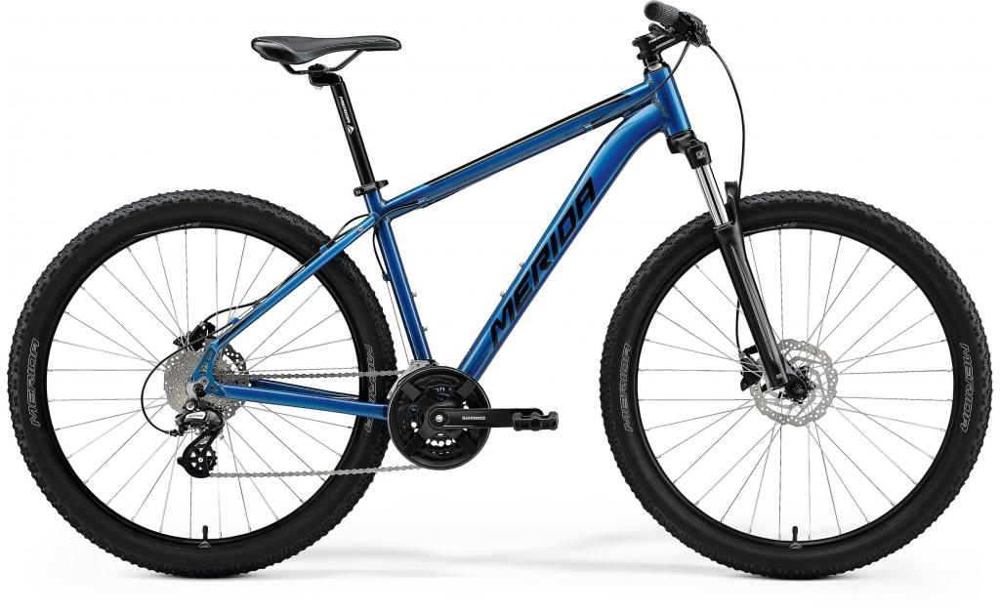

NOVINKA
Merida Big.Seven 200

Základní model 27,5 palcového horského kola Merida Big.Seven 200, který je však velmi dobře osazen za skvělou cenu. Lehký hlinikový rám je osazen odpruženou vidlicí Sunctour XCM s uzamykáním, hydraulickými kotoučovámi brzdami Tektro a řazením Shimano s 18 převody.
Informace o kolu
- 10 rychlostí
- 27,5 palcová kola
- Hlinikový rám
- Odpružená přední vidlice
- Velikosti rámu XS-L
Tabulka velikostí
| Velikost rámu | Velikost rámu (cm) | Výška postavy |
|---|---|---|
| XS | 34 | Pod 163 cm |
| S | 38 | 157 - 173 cm |
| M | 44 | 167 - 183 cm |
| L | 48 | 177 - 190 cm |
Barevné varianty
Produktové video
Cena s DPH
25 490 Kč